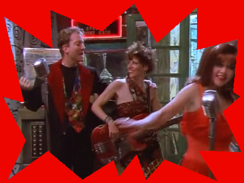
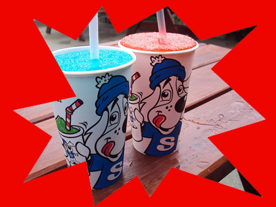
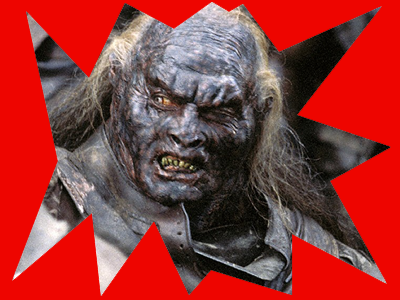
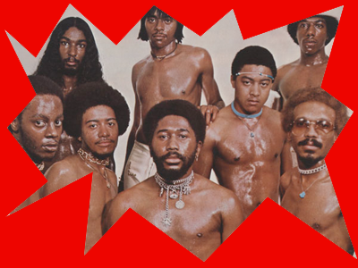
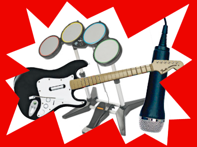
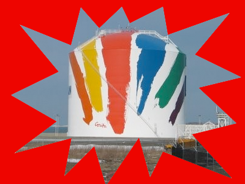
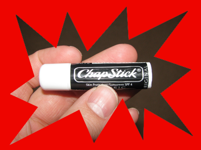
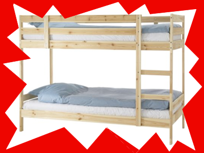
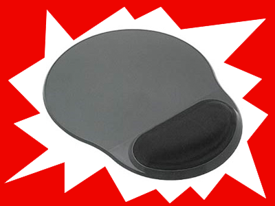

When performing a fight scene, it’s important for even the smallest details to be correct.
- Superhero is one cutting mad baron? Yes
- Agent Monroe, for one, throws a left
- With a sword, thrusts halfway at a goddess
- Bloody at first, Robin eludes death
- Joker’s weapons putting a kind of smear on top of some parents
- Dynasty is overturned? Not really
- Suffer defeat in Halo sequel
- Battle Grant between the borders
- Slaughter able Batman portrayer
- Inspector is sad to cede beginning of onslaught








